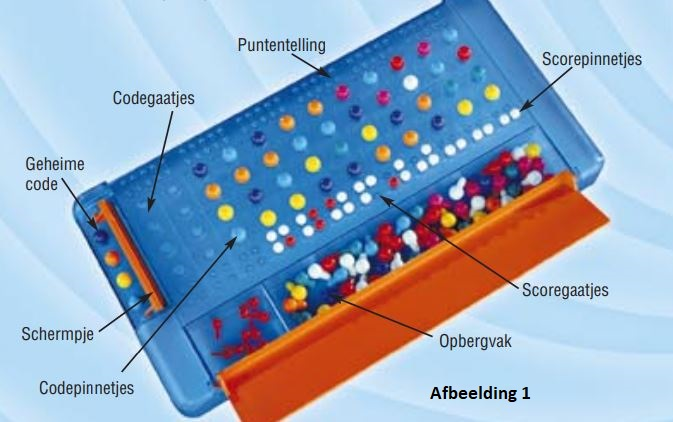
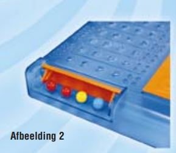
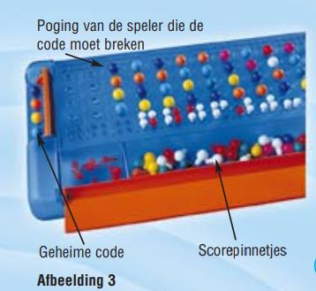

Gebruik je brein en breek de code!
Inhoud
Mastermind-spel, 96 codepinnetjes in 8 kleuren, 15 kleine rode scorepinnetjes, 15 kleine witte scorepinnetjes.
Doel van het spel
MASTERMIND geeft iedere speler de kans een ander te slim af te zijn.
De speler die de code maakt:
jij moet een geheime code verzinnen die zó moeilijk is dat je tegenstander hem niet kan breken. Je code kan uit iedere combinatie van de 8 verschillende kleuren bestaan.
De speler die de code ontcijfert:
jij moet de geheime code in zo min mogelijk pogingen breken. Je hebt maximaal 12 kansen om de code van je tegenstander na te maken – d.w.z. de juiste kleuren in de juiste volgorde te raden.
VOORBEREIDING
Maak de grote gekleurde codepinnetjes los van de kleine rode en witte scorepinnetjes. Je kunt de pinnetjes bewaren in het vak aan de zijkant van het Mastermindspel (zie afbeelding 1). Spreek voordat je begint af hoeveel ronden je gaat spelen. Bedenk daarbij dat je een even aantal moet spelen, zodat beide spelers evenveel kans hebben om te winnen.
Het Spel
Spreek af wie als eerste een code maakt. Deze speler moet een rijtje codepinnetjes opzetten (de geheime code) in de gaatjes aan de voorkant van het draaibare schermpje. Let op: de speler die de code moet ontcijferen mag niet kijken terwijl de codemaker de code opzet. Klap voordat het spel begint het schermpje om, zodat de code helemaal verborgen is voor de tegenspeler. De code bestaat uit 4 codepinnetjes in iedere gewenste combinatie van de 8 kleuren. Je mag 2 of meer pinnetjes van dezelfde kleur gebruiken.
Rood, rood, geel, blauw.
Als de code is opgezet, kan de tegenspeler beginnen met raden. Zijn/haar doel is de exacte kleuren en plaatsen van de verborgen codepinnetjes te kopiëren. Raden betekent dat je een rij codepinnetjes in het Mastermind-spel zet. Elke rij pinnetjes (dus elke poging) blijft de rest van de ronde zo staan. Na iedere poging moet de codemaker de tegenspeler vertellen wat er goed en fout is in het rijtje. Dat gaat als volgt:
Rode scorepinnetjes:
Zet een rood scorepinnetje in een scoregaatje voor elk codepinnetje van de juiste kleur op de juiste plaats.
Witte scorepinnetjes:
Zet een wit scorepinnetje in een scoregaatje voor elk codepinnetje van de juiste kleur op een verkeerde plaats.
Lege scoregaatjes
Laat een scoregaatje leeg voor elk codepinnetje van een verkeerde kleur.
Codebreker:
Codebreker: vergeet niet dat het jouw doel is de code in zo min mogelijk pogingen te breken, dus bestudeer het antwoord van de codemaker aandachtig om het aantal keuzemogelijkheden te beperken. Als de codebreker de code ontcijfert, moet de codemaker het schermpje omklappen om de geheime code te laten zien. De ronde is voorbij. Tel de score (zie Puntentelling hieronder)
PUNTENTELLING
Aan het eind van elke ronde krijgt de codemaker één punt voor elke rij pinnetjes die de codebreker heeft neergezet. Houd de score bij door een van de kleine scorepinnetjes in de rij voor de puntentelling te zetten (zie afbeelding 1). De ene speler gebruikt een wit pinnetje en de andere een rood pinnetje.
DE WINNAAR
De speler met het hoogste aantal punten wint het spel.
VARIATIE VOOR MEESTERBREINEN
In deze moeilijker versie van het spel mag de codemaker één of meer gaatjes in de code leeg laten. Dit betekent dat je in feite negen kleuren hebt om uit te kiezen. Gebruik de rode en witte scorepinnetjes op precies dezelfde manier als in het standaardspel; een leeg gaatje in de code wordt dus net zo beantwoord als een gaatje met een gekleurd pinnetje.
© 2000 Hasbro International Inc. Alle rechten voorbehouden. Gedistribueerd in België door S.A. Hasbro N.V., ’t Hofveld 6D, 1702 Groot Bijgaarden. Gedistribueerd in Nederland door Hasbro B.V., Postbus 3010, 3502 GA Utrecht.
Bron: https://www.spelregels.eu/PDF/spelregels-mastermind.pdf